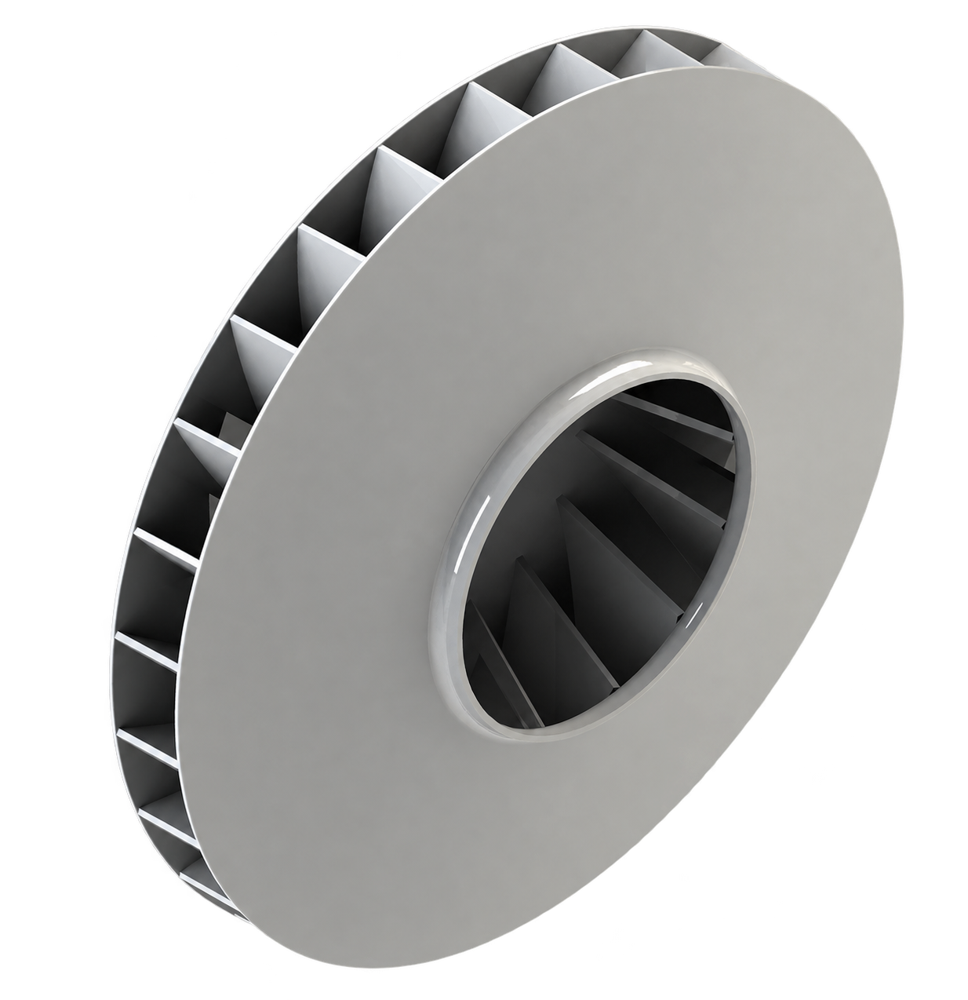
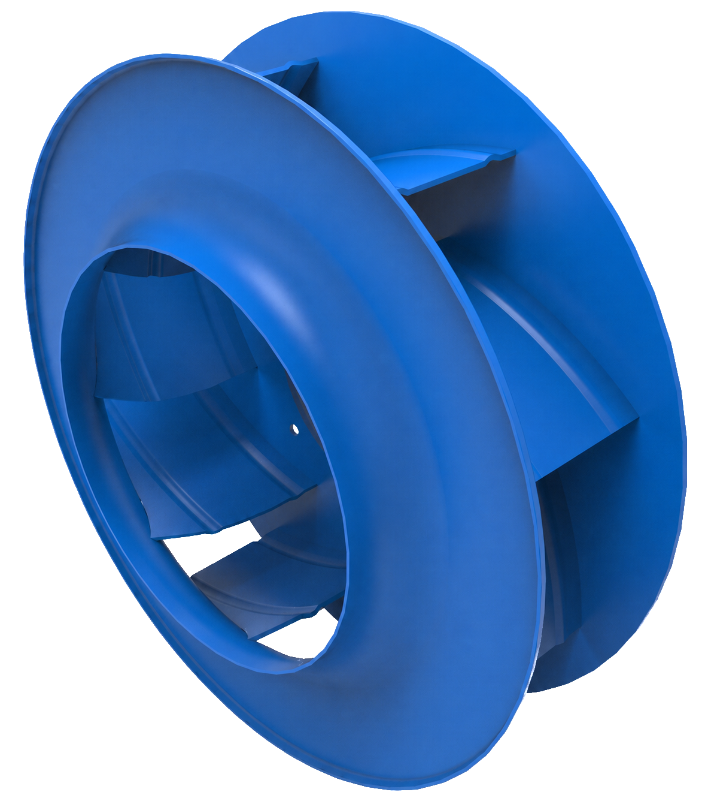
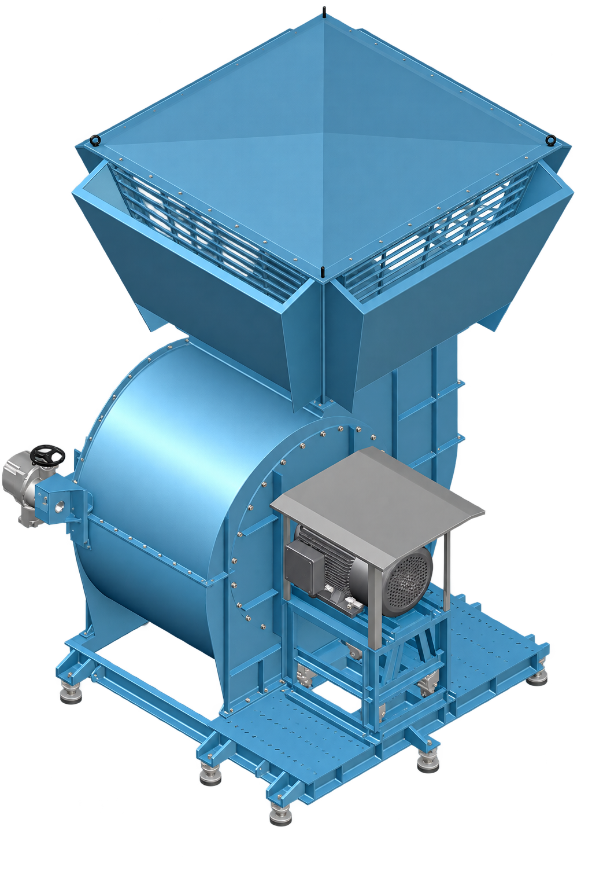
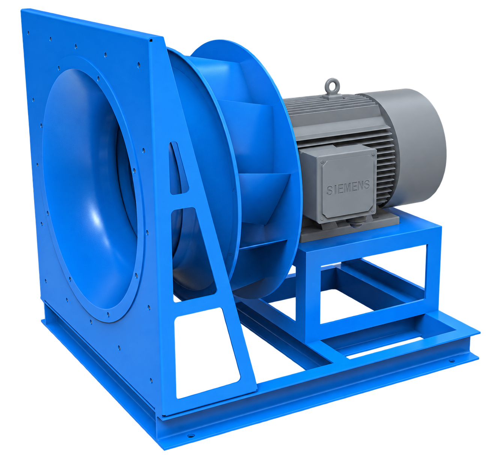
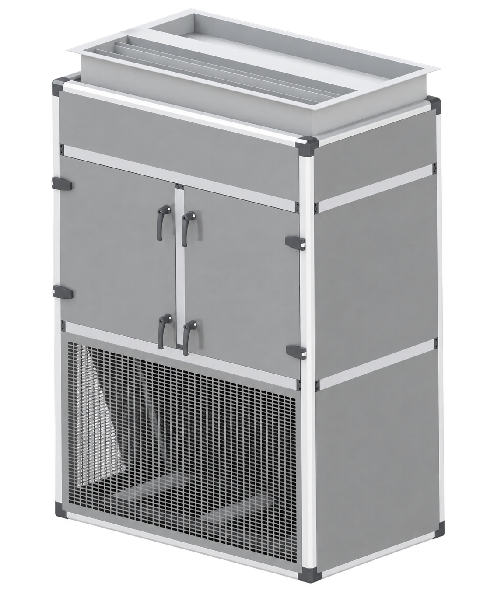
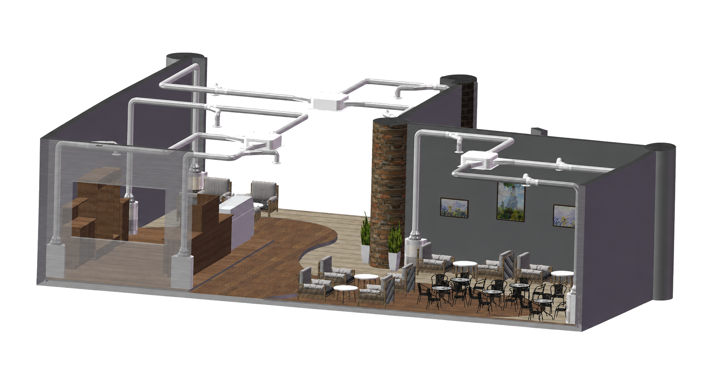
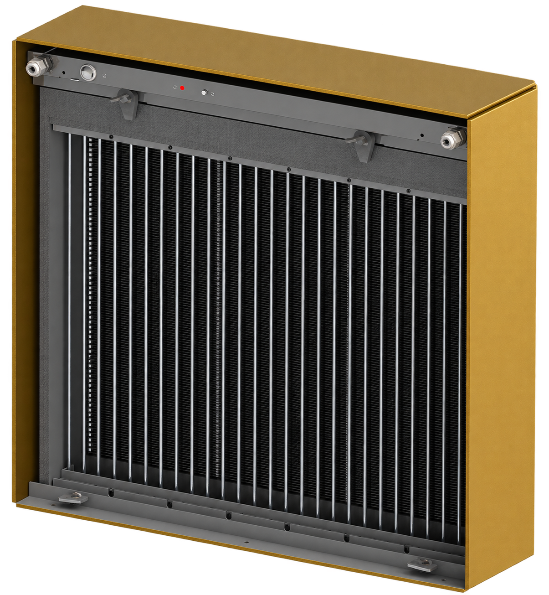
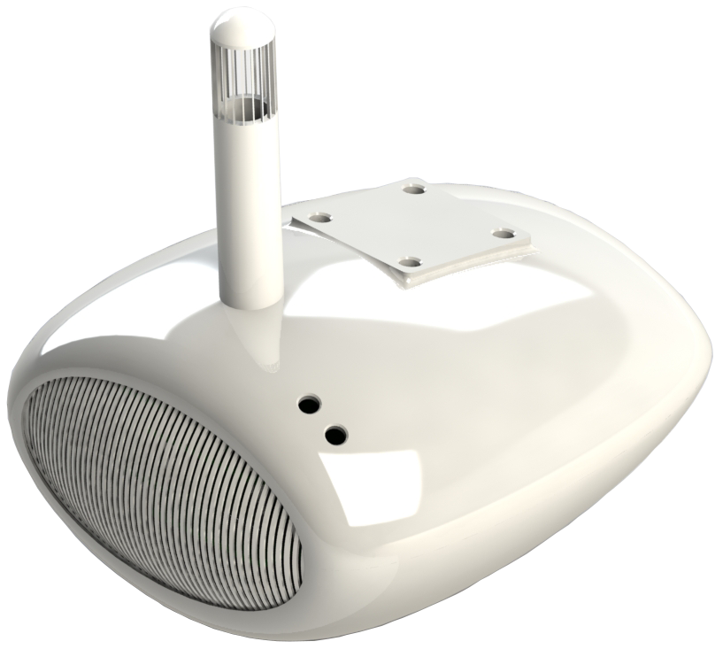
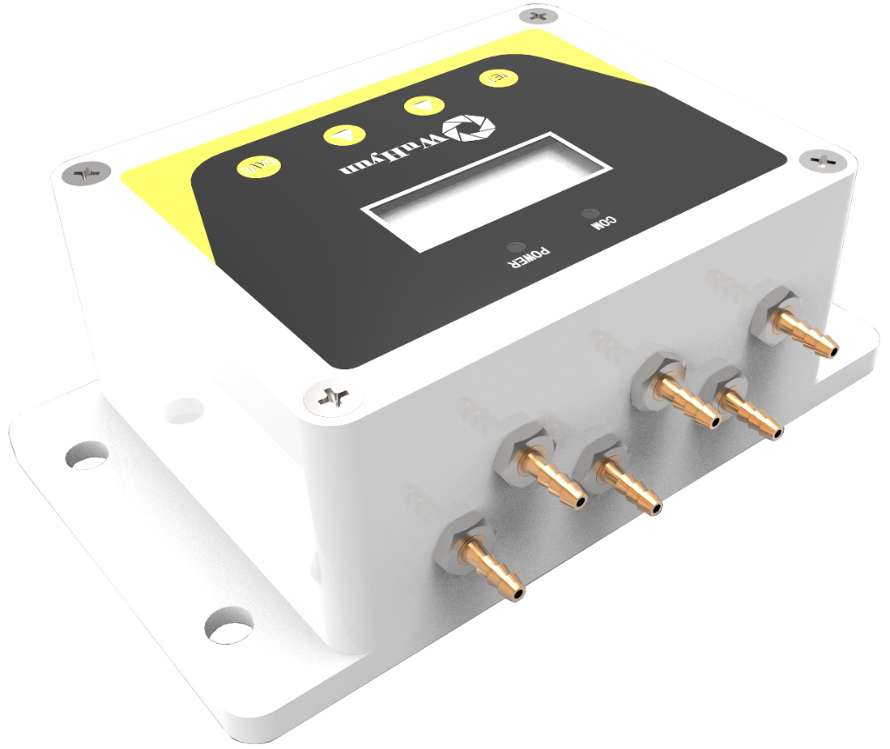
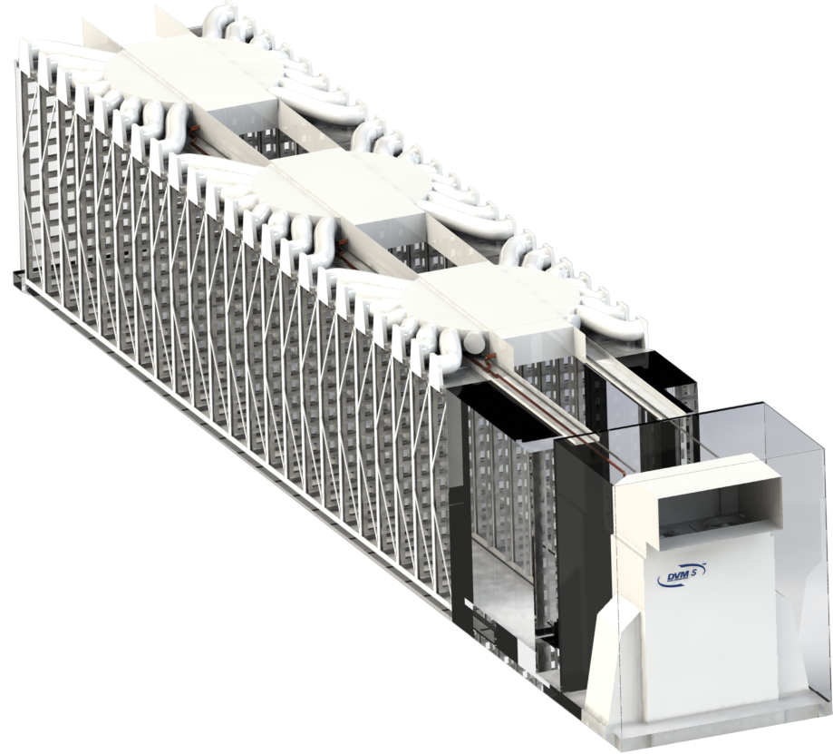

01 / WHAT WE DELIVER
HVAC
공기의 흐름을 설계하고, 산업 현장의 환경을 안정적으로 유지합니다.
Air & Climate Engineering제품군을 선택해 제품을 확인하세요.
01 / VENTILATION 02 / VENTILATION
03 / VENTILATION
04 / VENTILATION
05 / AIR SYSTEM
06 / AIR SYSTEM
07 / AIR SYSTEM
08 / AIR SYSTEM
09 / PARTS & CONTROL
02 / VENTILATION
03 / VENTILATION
04 / VENTILATION
05 / AIR SYSTEM
06 / AIR SYSTEM
07 / AIR SYSTEM
08 / AIR SYSTEM
09 / PARTS & CONTROL 10 / PARTS & CONTROL
11 / PARTS & CONTROL
10 / PARTS & CONTROL
11 / PARTS & CONTROL
Eurus Impeller
고효율·저소음 공기 유동 설계

Partial Impeller
Direct Drive 최적화 임펠러

Pull-Out Impeller
정비 접근성을 고려한 분리형 구조


Fan Model Line-Up
KAP · KAS · KAD 산업용 팬

Eco AHU / RTU
프로젝트 조건 기반 공조 시스템

Bio HVAC
공기 정화와 냉난방의 통합

IEF Filter
저압손 전기집진 공기 정화

IAQS
센서 기반 실내공기질 관리
CLT
세척 가능한 밀폐형 배수 트랩

FCM
팬 운전정보 실시간 제어

ECM
공조 시스템 통합 제어
02 / MANUFACTURING DATA
EDIM
IN DEVELOPMENT제품 사양부터 설계·BOM·생산 정보까지 하나의 제조 데이터 흐름으로 연결합니다.
Manufacturing Data Platform개발 단계의 기능과 핵심 아키텍처를 확인하세요.
EXPLORE CONNECTED MANUFACTURING